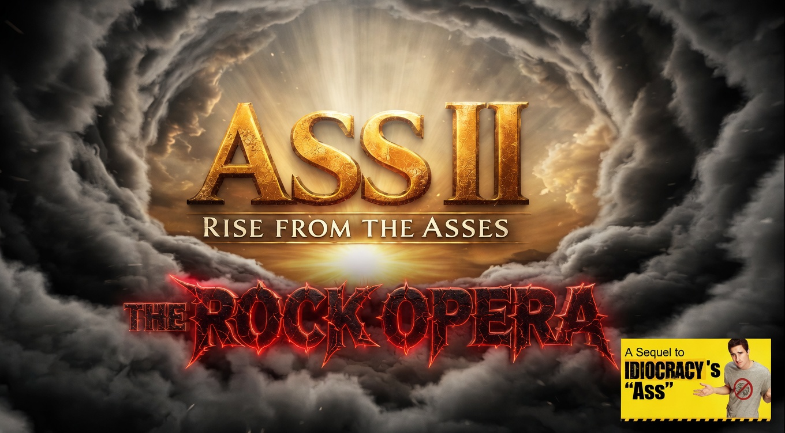

The Spiritual Spin-Off to Idiocracy's in-movie film, 'Ass'
Prologue
Where do we come from?
What connects us all?
What separates us from other living organisms?
For generations, we have looked ahead.
Searching for these answers.
Never realizing that the truth, was behind us all along.
Previously... on Idiocracy
Joe Bowers awakens 500 years in the future, only to discover that humanity’s collective intelligence has dramatically declined. The highest-grossing film at the time was simply titled 'Ass'. Ass was ninety, uninterrupted minutes of a man’s ass on the big screen. Ass was the No. 1 movie of 2502 and won 8 Oscars. ‘Ass II - Rise from the Asses’ is the sequel to that in-universe film, expanding the ass lore even further into absurdity.
About
Rise from the Asses is a satirical, non-sexual AI generated film project built around absurdity, sarire, censorship, and visual comedy. The movie positions itself as a spiritual spin-off to the 2006 cult classic Idiocracy, directed by Mike Judge. All set to a soundtrack of rock anthems, ballads and soaring guitar solos!
The beloved cult classic celebrates its 20-year anniversary in 2026. Ass II was created to honor that legacy.
Hi everyone, my name is Jamie Barone. Before you watch the movie, I wanted to come on and say:
I know there are a million other ways you can spend your time, and I genuinely appreciate that you want to spend it with me here today. And I get it.... this is not a traditional website, AI generated project...and that means instant skepticism.
Let me first acknowledge that I understand AI is divisive. Most people think it is shallow, soulless, slop, and I absolutely agree. It takes very little effort to produce endless amounts of images and videos. This production was made almost entirely from AI. So, what makes this any different?
Here is the uncomfortable truth. Hollywood had been stagnant and soulless for years, long before AI came along. Without fail, Hollywood has destroyed the franchises we love like Star Trek, Star Wars, Marvel, Terminator, Predator, Indianna Jones and Dr. Who to name a few. These don't feel like stories anymore. They feel more like quarterly earnings reports.
And then we are told we are racist or misogynistic for not applauding.
But from a real-world point of view, without AI this movie simply wasn't going to get made. I have no budget, no staff. And while hiring hundreds of butt actors and flying around the world taking butt footage would have been fun, it also would have bled me dry.
That said, while AI made this project possible, it did not make it effortless. Hundreds of hours were spent developing prompts, generating and reviewing footage, organizing clips, editing sequences, refining ideas, and, perhaps most importantly, imagining new and increasingly absurd asses.
What began as a silly concept gradually evolved into a genuine creative project. Every scene was selected, arranged, and refined with care to create something entertaining, memorable, and unlike anything else on the internet.
Thank you for taking the time to watch. I sincerely hope you enjoy this film. I hope it leaves you with a smile, a laugh, and perhaps a newfound appreciation for the strange things that can happen when creativity and technology collide.
And remember, all people have asses. Men, Women, tall or short. Black, white or any shade in between. This movie is about unity, bringing all asses together regardless of race, gender or whatever side of the political spectrum you're on!
Teaser Trailer for Ass II. If you've seen Idiocracy, you'll know what this is. Stay tuned for more. I regret nothing.
'Ass II - Rise from the Asses' Official Trailer | The Most Absurd AI Film Created (Finally, AI Done Right!)
A newly released independent film, Ass II: Rise from the Asses, is generating early buzz, and controversy, for its unconventional approach to storytelling. Positioned as a spiritual successor to the in-universe film from the 2006 cult classic Idiocracy, the project blends AI-generated visuals with satirical commentary on modern cinema, technology, and culture. While some critics dismiss it outright as AI slop, others are calling it a bold reflection of Hollywood’s evolving landscape.
Written / Directed / Created by: Jamie Barone
Music Contributors
Sourced from YouTube royalty free music library and Pixabay
None of these artists required attribution (but we give it to them anyway!)
Intro 00:00:00
Nick Panekai Assets - Thrash Metal Tribute
Phase 1: Young Adult 00:03:19
01. Lin Hoyasi - Don't Go With the Flow
02. Hanu Dixit - Raga Of Thousand Suns
03. NEFFEX - Retribution
04. Ethan Meixsell - Thor's Hammer
05. Ryan Stasik, Kanika Moore - Precious Girl
06. Vans in Japan - Higher Octane
07. Ttor Official - Digital Strings
Phase 2: Middle Age 00:24:34
08. Blue Deer - The Reins
09. Nick Panekai Assets - Chiptune
10. Nick Panekai Assets - Prayer to Saint Michael (Performed in Latin)
11. Cooper Cannell - When Johnny Comes Marching Home
12. Paradise King - Northwind Crew
13. Ethan Meixsell - Demise
14. Ryan Stasik, Kanika Moore - Take It Over
15. National Sweetheart - Burlesque
16. Nick Panekai Assets - Riff Storm
17. Acidic Void - Atombier (Performed in German)
18. Everet Almond - Night Falls
Phase 3: Old Age 00:50:37
19. Ethan Meixsell - Granite
20. The Digital Artist - Gas Attack-202076
21. VJ Galaxy - Eternal Ascendancy
22. The Boys Beats - Night Whispers Over the Hills
23. Chris Haugen - Taverna Mystica
24. War Bringer Ghesh - Fractured Abyss
Phase 4: Death 01:07:59
25. Uncut Grain Studio - Sole Observer
Phase 5: Rebirth/Ascension 01:11:28
26. Ttor Official - King of Kings
Credits: 01:13:21
27. Ethan Meixsell - Battle Ground
This is a non-commercial, fan-made parody exploring absurdist humor through cinematic presentation. This content is intended as satire and is not affiliated with or endorsed by any official entities connected to Idiocracy. All characters and visuals are artificially generated. Any resemblance to real persons, living or dead, is purely coincidental. This video contains non-sexual nudity and is intended for comedic and artistic purposes only. All human depictions are intended to represent adults (21+). This project is freely available and will be shared across platforms that permit its distribution.